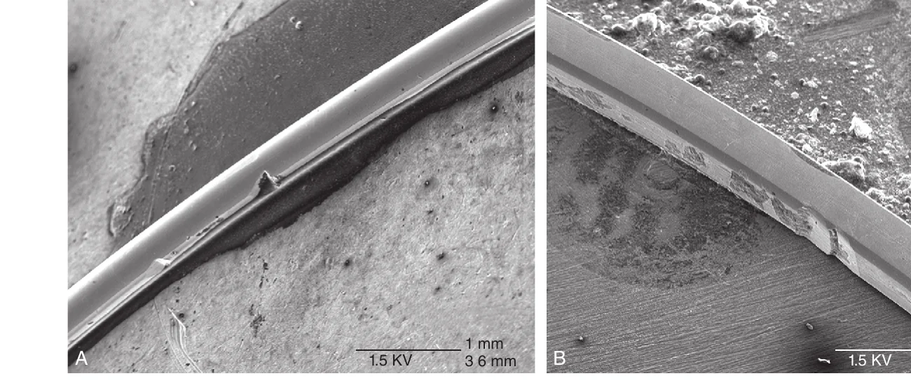

نسخه استخراجشده؛ ترجمه یا تأیید علمی انجام نشده است. وضعیت: captured
در مکانیک اسلایدینگ، دندان روی سیم میلغزد — مثل مهره روی نخ.
نیرو از یک منبع بیرونی (فنر NiTi، الاستیک چین، پاورچین) به براکت وارد میشود و دندان در امتداد سیم کشیده میشود. سیم نقش ریل را دارد، نه نقش منبع نیرو.
👉 اما اینجا یک واقعیت مهم هست: بخشی از نیرو صرف غلبه بر اصطکاک میشود و هرگز به دندان نمیرسد.
💡 رابطهی کلیدی: نیروی مؤثر = نیروی اعمالی − اصطکاک
معنای بالینی این معادله دو چیز است. اول اینکه نیرویی که روی فنر میخوانی، نیرویی نیست که دندان میگیرد. دوم، و مهمتر، اینکه اگر اصطکاک به اندازهی نیروی اعمالی باشد، نیروی مؤثر صفر میشود — دندان تحت فشار است اما حرکت نمیکند.
⚠️ همین حالت است که در بالین گمراهکننده میشود: بیمار از فشار شکایت دارد، فنر کشیده است، اما هیچ حرکتی رخ نمیدهد.

آنچه در برابر لغزش مقاومت میکند، یک چیز نیست بلکه سه پدیدهی جداگانه است:
| جزء | منشأ |
|---|---|
| اصطکاک کلاسیک | تماس سیم با اسلات و لیگاتور |
| بایندینگ | کج شدن دندان و گیر کردن گوشههای سیم در اسلات |
| ناچینگ | تغییر شکل دائمی سیم در محل تماس |
⚠️ نکتهی مهم: در عمل، سهم بایندینگ اغلب بیش از اصطکاک کلاسیک است — و برخلاف اصطکاک کلاسیک که تقریباً ثابت است، بایندینگ با تیپ شدن دندان بیشتر میشود.
💡 و همین یک حلقهی معیوب میسازد: نیروی بیشتر ← تیپ بیشتر ← بایندینگ بیشتر ← حرکت کمتر. به همین دلیل زیاد کردن نیرو در مکانیک لغزشی، اغلب نتیجهی معکوس میدهد.
ناچینگ، شدیدترین حالت است: سیم در محل تماس با گوشهی اسلات تغییر شکل دائمی پیدا میکند و عملاً یک «قفل» میسازد. از آن پس، هیچ نیرویی لغزش را از سر نمیگیرد تا سیم عوض شود.
چهار راه عملی برای کاهش مقاومت در برابر لغزش:
⚠️ دربارهی مورد دوم و سوم یک تعادل هست: لقی زیاد و لیگاتور بسیار شل، اصطکاک را کم میکنند اما کنترل تورک و موقعیت را هم از دست میدهند. سیمی که آزادانه در اسلات میچرخد، هیچ اطلاعاتی به دندان منتقل نمیکند.
👉 قاعدهی مهم این درس: اگر حرکت متوقف شد، پیش از افزایش نیرو به بایندینگ شک کن. نیروی بیشتر، بایندینگ بیشتر میسازد نه حرکت بیشتر.
💡 در چنین موقعیتی، کارهای درست عبارتاند از: کم کردن نیرو، بررسی سیم از نظر ناچینگ، و اطمینان از اینکه دندان قبل از شروع رتراکشن کاملاً تراز شده بود.
نوع سؤال: ساخت کلمه · 6 خانه
حروف منبع: ی · ا · گ · ن · چ · ن